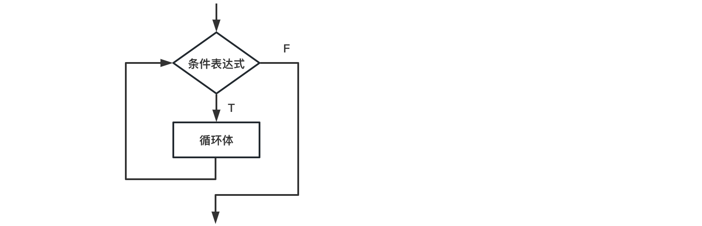

循环语句#
循环结构是在满足一定条件下反复执行某一段语句块的流程控制结构。反复被执行的语句块被称为循环体。
（一）while循环#
while循环语句的语法形式为：
while(条件表达式):
循环体
while语句的执行过程是先判断条件表达式的值，若值为True，则执行循环体，否则将跳过循环体，执行while语句后面的语句。
每次循环体执行完毕后，再转到条件表达式判断真假，以决定是否再次执行循环体。

这个例子是计算1到100的自然数的和。
n = 1 # n负责存储自然数，用于遍历自然数1，2，3，4，5.。。。100
s = 0 # s负责存储求和的结果，初始为0
while(n<=100):
s = s + n #求和，并保存求和的结果到s
print('n:', n, 's:', s)
n = n + 1 #让自然数+1，并更新自然数n
print('The sum from 1 to 100 is', s)
n: 1 s: 1
n: 2 s: 3
n: 3 s: 6
n: 4 s: 10
n: 5 s: 15
n: 6 s: 21
n: 7 s: 28
n: 8 s: 36
n: 9 s: 45
n: 10 s: 55
n: 11 s: 66
n: 12 s: 78
n: 13 s: 91
n: 14 s: 105
n: 15 s: 120
n: 16 s: 136
n: 17 s: 153
n: 18 s: 171
n: 19 s: 190
n: 20 s: 210
n: 21 s: 231
n: 22 s: 253
n: 23 s: 276
n: 24 s: 300
n: 25 s: 325
n: 26 s: 351
n: 27 s: 378
n: 28 s: 406
n: 29 s: 435
n: 30 s: 465
n: 31 s: 496
n: 32 s: 528
n: 33 s: 561
n: 34 s: 595
n: 35 s: 630
n: 36 s: 666
n: 37 s: 703
n: 38 s: 741
n: 39 s: 780
n: 40 s: 820
n: 41 s: 861
n: 42 s: 903
n: 43 s: 946
n: 44 s: 990
n: 45 s: 1035
n: 46 s: 1081
n: 47 s: 1128
n: 48 s: 1176
n: 49 s: 1225
n: 50 s: 1275
n: 51 s: 1326
n: 52 s: 1378
n: 53 s: 1431
n: 54 s: 1485
n: 55 s: 1540
n: 56 s: 1596
n: 57 s: 1653
n: 58 s: 1711
n: 59 s: 1770
n: 60 s: 1830
n: 61 s: 1891
n: 62 s: 1953
n: 63 s: 2016
n: 64 s: 2080
n: 65 s: 2145
n: 66 s: 2211
n: 67 s: 2278
n: 68 s: 2346
n: 69 s: 2415
n: 70 s: 2485
n: 71 s: 2556
n: 72 s: 2628
n: 73 s: 2701
n: 74 s: 2775
n: 75 s: 2850
n: 76 s: 2926
n: 77 s: 3003
n: 78 s: 3081
n: 79 s: 3160
n: 80 s: 3240
n: 81 s: 3321
n: 82 s: 3403
n: 83 s: 3486
n: 84 s: 3570
n: 85 s: 3655
n: 86 s: 3741
n: 87 s: 3828
n: 88 s: 3916
n: 89 s: 4005
n: 90 s: 4095
n: 91 s: 4186
n: 92 s: 4278
n: 93 s: 4371
n: 94 s: 4465
n: 95 s: 4560
n: 96 s: 4656
n: 97 s: 4753
n: 98 s: 4851
n: 99 s: 4950
n: 100 s: 5050
The sum from 1 to 100 is 5050
练习：如何求1，3，5，7，。。99，间隔为2的等差数列的和。#
（二）for循环#
for语句通常用来遍历字符串、列表、元祖等序列数据类型中的元素。对序列中的每个元素执行一次相关的循环体。for语句的语法形式如下：
for 变量 in 序列:
循环体
下面这个例子使用for语句循环输出列表list1中的所有元素。
list1 = [1,2,3,4,5]
for x in list1:
print(x)
1
2
3
4
5
此外，for语句经常使用range/xrange函数生成序列。
for i in range(1,5):
print(i)
1
2
3
4
使用range函数生成序列，请注意它的起止范围。函数range(1,5)生成序列[1,2,3,4]。
（三）break语句#
break语句用于控制程序提前结束循环而执行循环体后面的语句。
list2 = [] # 定义一个空的列表
while(True):
x = int(input('请输入数据（当输入-1时结束）:'))
if x == -1:
break # 当输入=-1时，则跳出循环
else:
list2 = list2 + [x]
print(list2)
[1, 2, 3]
（四）continue语句#
continue语句用于结束本次循环，重新判断条件表达式真假，若为True，则继续循环，否则，结束循环。
i=0
while(i<=10):
i=i+1
if i%2 != 0: # 如果i是奇数，则continue，跳至while语句，不执行后面的print
continue # %为整除 !=为不等于
print(i) # 注意此语句的锁进与上面的if对齐，表示其仍在while内
2
4
6
8
10
练习：高斯小时候的故事#
高斯小时候非常淘气，一次数学课上，老师为了让他们安静下来，给他们列了一道很难的算式，让他们一个小时内算出1+2+3+4+5+6+……+100的得数。
range(101)就可以生成0-100的整数序列，计算如下：
练习： 循环打印#
请利用循环for语句和print语句，依次对list中的每个名字打印出Hello, xxx!：
L = ['Bart', 'Lisa', 'Adam']
练习：计算平均值#
均值是描述性统计方法中最常见的指标，它主要用来计算全体样本或抽样的平均值。
试用变量、列表list和循环for语句计算数列 [1, 2, 3, 4, 5]的平均值。
练习：计算方差#
参照上述平均值的计算方法，进一步计算数列[1, 2, 3, 4, 5]的方差。 方差公式为：
提示：使用列表list和循环for语句，也可使用函数def语句
练习：计算最大值#
试用变量、循环for语句和判断if语句计算数列 [1, 5, 3, 4, 2]中的最大值。
总结#
循环是让计算机做重复任务的有效的方法。
break语句可以在循环过程中直接退出循环，而continue语句可以提前结束本轮循环，并直接开始下一轮循环。这两个语句通常都必须配合if语句使用。要特别注意，不要滥用
break和continue语句。break和continue会造成代码执行逻辑分叉过多，容易出错。大多数循环并不需要用到break和continue语句，上面的两个例子，都可以通过改写循环条件或者修改循环逻辑，去掉break和continue语句。有些时候，如果代码写得有问题，会让程序陷入“死循环”，也就是永远循环下去。在命令行模式下用
Ctrl+C退出程序，或者在Jupyter里点击打断内核或者重启内核。
练习答案#
练习答案：如何求1，3，5，7，。。99，间隔为2的等差数列的和#
n = 1 # n负责存储自然数，用于遍历自然数1，2，3，4，5.。。。100
s = 0 # s负责存储求和的结果，初始为0
while(n<=100):
s = s + n #求和，并保存求和的结果到s
print('n:', n, 's:', s)
n = n + 2 #让自然数+1，并更新自然数n
print('The sum from 1 to 100 is', s)
n: 1 s: 1
n: 3 s: 4
n: 5 s: 9
n: 7 s: 16
n: 9 s: 25
n: 11 s: 36
n: 13 s: 49
n: 15 s: 64
n: 17 s: 81
n: 19 s: 100
n: 21 s: 121
n: 23 s: 144
n: 25 s: 169
n: 27 s: 196
n: 29 s: 225
n: 31 s: 256
n: 33 s: 289
n: 35 s: 324
n: 37 s: 361
n: 39 s: 400
n: 41 s: 441
n: 43 s: 484
n: 45 s: 529
n: 47 s: 576
n: 49 s: 625
n: 51 s: 676
n: 53 s: 729
n: 55 s: 784
n: 57 s: 841
n: 59 s: 900
n: 61 s: 961
n: 63 s: 1024
n: 65 s: 1089
n: 67 s: 1156
n: 69 s: 1225
n: 71 s: 1296
n: 73 s: 1369
n: 75 s: 1444
n: 77 s: 1521
n: 79 s: 1600
n: 81 s: 1681
n: 83 s: 1764
n: 85 s: 1849
n: 87 s: 1936
n: 89 s: 2025
n: 91 s: 2116
n: 93 s: 2209
n: 95 s: 2304
n: 97 s: 2401
n: 99 s: 2500
The sum from 1 to 100 is 2500
练习答案：循环打印#
L = ['Bart', 'Lisa', 'Adam']
for i in L:
print('Hello, %s!' %i)
Hello, Bart!
Hello, Lisa!
Hello, Adam!
L = ['Bart', 'Lisa', 'Adam']
for i in range(len(L)):
print('Hello %s!' %L[i])
Hello Bart!
Hello Lisa!
Hello Adam!
练习答案：计算平均值#
x = [1,2,3,4,5]
s = 0
for i in x:
s = s + i
avg = s/len(x)
print("Average value of %s is: %.2f" %(x, avg))
Average value of [1, 2, 3, 4, 5] is: 3.00
练习答案：计算方差#
def mean(x):
"""
本函数计算给定列表x的平均值
"""
s = 0
for i in x:
s = s + i
mu = s/len(x)
return mu
def variance(x):
"""
本函数计算给定列表x的方差
"""
mu = mean(x)
s = 0
for i in x:
s = s + (i - mu)**2
var = s/len(x)
return var
x = [1,2,3,4,5]
variance(x)
2.0
练习答案：计算最大值#
l=[1, 5, 3, 4, 2]
max_num = 0
for i in l:
if i > max_num:
max_num = i
max_num
5